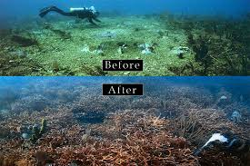

Marine Biodiversity
Marine biodiversity contain the stunning variety of life in our oceans,from beautiful coral reefs with courful fish to deep oceans where majestic whales roam.This rich biodiversity not only dazzel our eyes but also support most important ecosystem functions.Marine biodiversity entrust the stability and productivity of the ocean,providing food,medicine,and life of millions of people.It also plays main role in maintaining the earth's climate by sequestering carbon and producing oxygen.Protecting this beauty is essential for sustaining the health and balnce of our beautiful planet.
What humans have done?
Human activities have had made negative impacts on ocean biodiversity.Overfishing has affects fish population and distrupted marine main food webs.Pollution especially plastics and chemicals,harms life and ecosystem of the ocean.Habitat distruction, such as coral reef corrosion and coastal development,reduces biodiversity.Climate change is also big threat for ocean which created by humans.Acidification and rising temperature that threatn mainly to marine species.
How to protect marine biodiversity?
Before we lost our oceans Lets take some actions to protect its richness with these multiple steps.
1.Aware fishers,sustainable fish practices.
Overfishing is a significant threat to marine biodiversity.Implementing fishing practices, such as setting limits for fishing,protecting spawning grounds,and using selective fishing gear to reduce bycatch,ensure fish populations and ecosystem balance.
2.Reduct Pollution
Plastics plays huge role in ocean pollution.So we should improve waste management, promoting recycling,and specially reduce plastic in use.
3.Restore Habitats.
Restoring damaged habitats like coral reefs, mangroves, and seagrass beds can help increase biodiversity and strengthen ecosystems. Restoration projects usually involve planting new vegetation, rebuilding reef structures,
4.Establish Marine Protected Areas (MPAs)
MPAs are areas where human activities are limited to protect nature. Expanding and managing MPAs well helps safeguard habitats, allows ecosystems to heal, and supports a variety of life.
5.Sustainable Tourism
Promoting eco-friendly tourism practices minimizes environmental impact and raises awareness about the importance of ocean conservation.
6.International Cooperation
Ocean conservation is a global issue that requires international cooperation. Countries must work together to address transboundary challenges, share knowledge and resources, and implement global agreements aimed at protecting marine biodiversity.
7.Policy and Legislation
Strong policies and regulations are essential for protecting marine biodiversity. Governments and international organizations need to enforce laws that prevent overfishing, pollution, and habitat destruction while promoting sustainable use of ocean resources.
Progress so far?
- Sustainable fishing regulations and practices have resulted in the recovery of certain fish populations, such as the Atlantic bluefin tuna.
- Initiatives like the Marine Stewardship Council (MSC) certification have promoted sustainable fishing and informed consumer choices, reducing overfishing and bycatch.
- Many countries have implemented bans on single-use plastics and initiatives to clean up plastic waste, reducing pollution in marine environments.
- Enhanced waste management systems and international agreements have helped to decrease the amount of plastic and chemical pollutants entering the oceans.
- Restoration projects have successfully rehabilitated damaged coral reefs, increasing coral cover and biodiversity.
- The rise of eco-tourism has promoted conservation awareness and provided financial support for marine protected areas and local communities.
- Regulations and guidelines for sustainable tourism have minimized environmental impacts on sensitive marine habitats.
- Global agreements like the Convention on Biological Diversity and the Paris Agreement have set targets and frameworks for marine conservation efforts.
- Programs like the Global Ocean Alliance and the United Nations Decade of Ocean Science for Sustainable Development have galvanized worldwide action for ocean conservation.